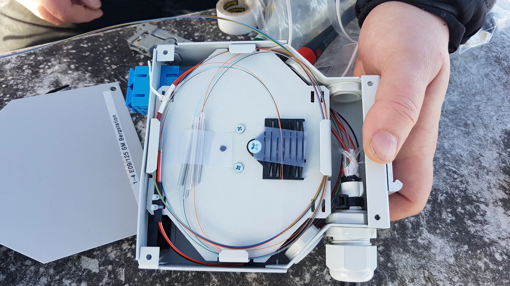
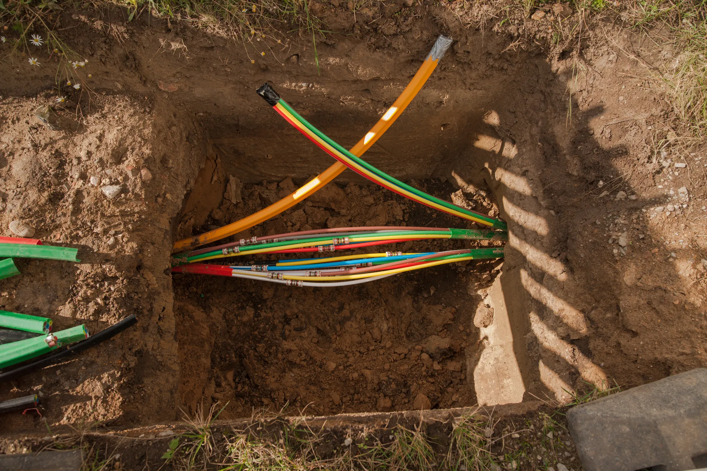
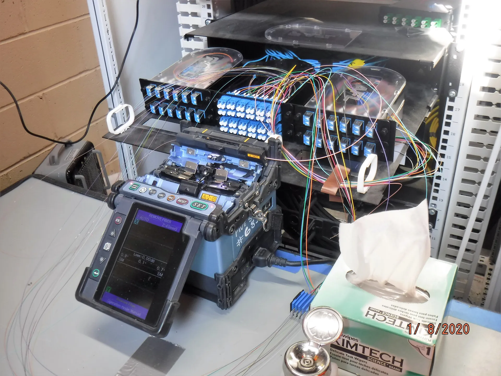
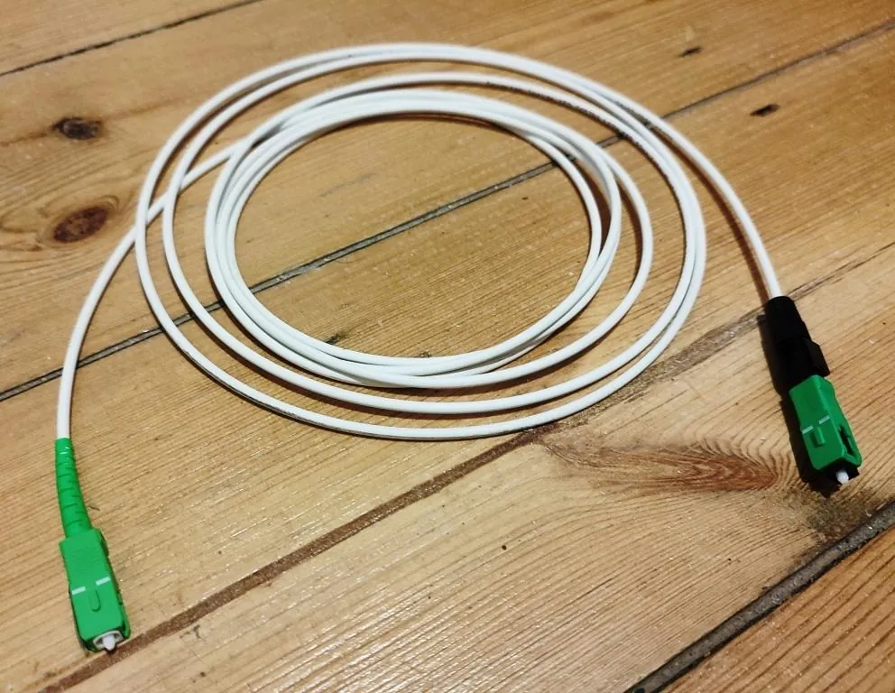
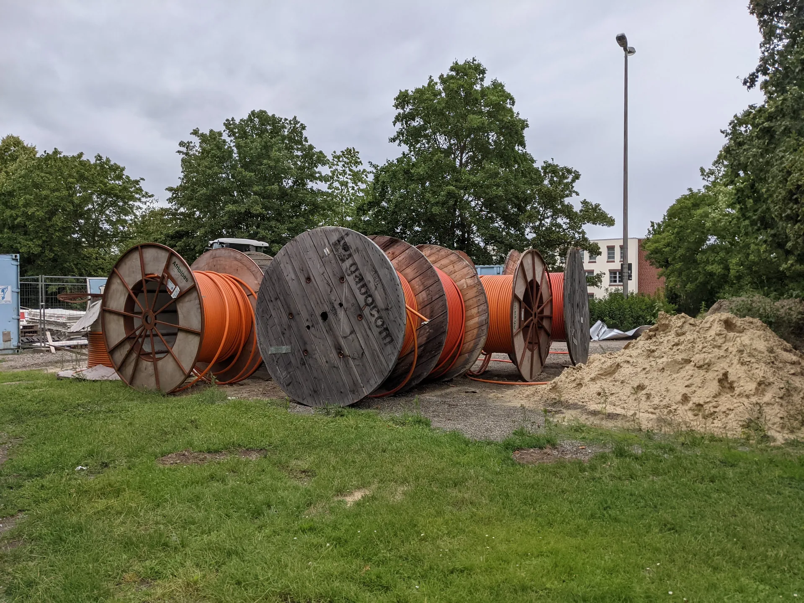
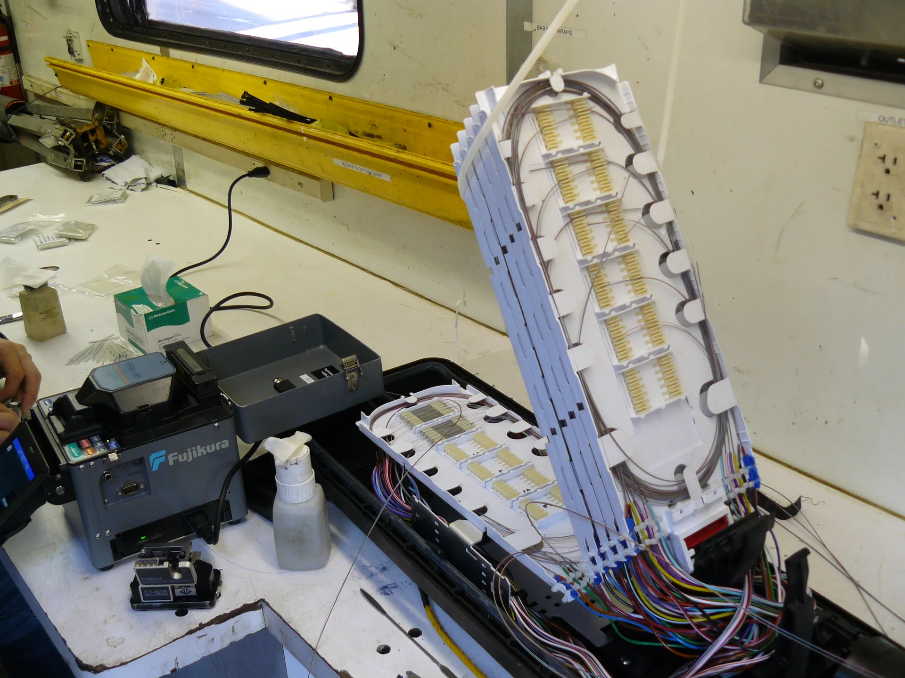
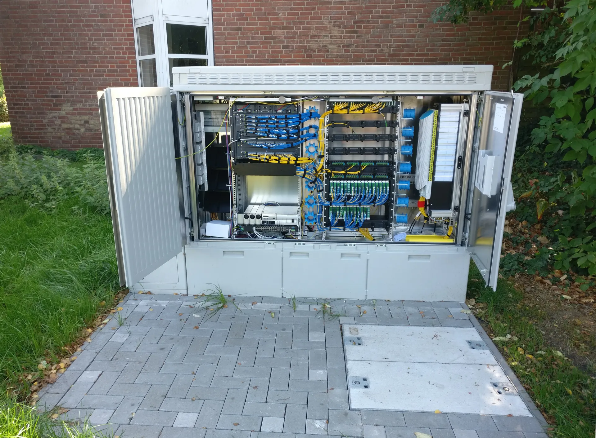

Światłowódod drogido gniazdka.
Przyłącza do domów, wykopy i przewierty sterowane, spawanie włókien i okablowanie budynków. Ta sama ekipa Exclusive Inside, która wykańcza wnętrza – z tym samym porządkiem na budowie.
Zakres prac
Cała trasaalbo jeden odcinek.
Dla właścicieli domów, wspólnot i deweloperów – albo jako podwykonawca dla operatora.
Zapytaj o wycenę
Przyłącza
Od skrzynki operatora do domu
Wykopy i przewierty
Bez rozbierania podjazdu
Spawanie
Włókna, mufy, przełącznice
Budynki
Piony, poziomy, kanalizacjaZdjęcia w tym dziale są poglądowe (Wikimedia Commons) – w docelowej wersji zastąpimy je zdjęciami z Państwa realizacji.

Przyłączado domów.
Doprowadzamy kabel od punktu operatora przy drodze do budynku i montujemy zakończenie w domu – w miejscu, które ustalisz, a nie tam, gdzie było najprościej.
- Trasa kabla uzgodniona z właścicielem
- Przejście przez ścianę fundamentową lub elewację
- Puszka abonencka i zakończenie włókna w domu

Wykopyi przewierty sterowane.
Kabel w ziemi prowadzimy wykopem albo przewiertem sterowanym – pod podjazdem, kostką czy trawnikiem przewiert pozwala przejść bez rozbierania nawierzchni.
- Wykopy pod instalacje
- Przewierty sterowane pod nawierzchnią
- Rury osłonowe i mikrorurki
- Odtworzenie terenu po pracach

Spawaniei montaż osprzętu.
Łączymy włókna spawarką, układamy spawy w kasetach i montujemy osprzęt: mufy, przełącznice, puszki. Po spawaniu połączenia są sprawdzane pomiarem.
- Spawanie włókien
- Montaż muf, przełącznic i puszek
- Pomiary po wykonaniu
Okablowaniew budynkach.
W budynkach wielorodzinnych i lokalach prowadzimy piony i poziomy do mieszkań. W nowych domach przygotowujemy trasę pod światłowód, zanim powstaną ściany i wykończenie.
- Piony i poziomy w budynkach wielorodzinnych
- Kanalizacja teletechniczna w nowym budynku
- Trasy kabli schowane w ścianach przy remoncie
Jak powstaje przyłącze
Pięć odcinków.Jedna ekipa.
Przewijaj – zobaczysz, którędy światłowód idzie od skrzynki przy drodze do Twojego salonu.

- 01 · Przy drodze
Punkt operatora
Sygnał zaczyna się w szafie lub studni operatora. Stąd planujemy trasę do budynku.
- 02 · Pod ziemią
Wykop albo przewiert
Kładziemy rurę osłonową lub mikrorurkę. Gdzie nie da się kopać – przewiert sterowany pod nawierzchnią.
- 03 · W rurze
Kabel do budynku
Kabel wprowadzamy do rury i przez przepust do środka budynku – szczelnie, bez zawilgocenia ściany.
- 04 · W domu
Spawanie i zakończenie
Włókna spawamy w puszce abonenckiej, a połączenie sprawdzamy pomiarem.
- 05 · Gotowe
Złącze dla operatora
Zostaje złącze, do którego operator podłącza swoje urządzenie. Ty wybierasz, w którym pokoju.
Dla kogo
Inny klient.Ten sam porządek.
Robimy całą trasę albo tylko odcinek, który jest potrzebny.
Właściciele domów
Operator przyłącza Cię do sieci, ale trasę na działce i w domu trzeba zrobić porządnie. Uzgadniamy ją z Tobą i sprzątamy po sobie.
Deweloperzy i wspólnoty
Kanalizacja teletechniczna w nowych budynkach, piony i poziomy w budynkach wielorodzinnych, przygotowanie lokali pod operatora.
Operatorzy i wykonawcy
Wykopy, przewierty, wciąganie i wdmuchiwanie kabli, spawanie, montaż osprzętu, pomiary.

O firmie
Exclusive Inside.Dwa działy, jedna firma.
Na co dzień wykańczamy wnętrza – łazienki, schody, blaty z płyt wielkoformatowych. Instalacje światłowodowe robimy z tą samą dokładnością: trasa uzgodniona z właścicielem, porządek po pracy.

Drugi dział firmy
Światłowód przy remoncie.Potem płytki.
Robisz łazienkę albo wykończenie domu? Najpierw poprowadzimy trasę kabla w ścianach, potem położymy płytki – bez listew i bez kucia po fakcie.
Czy do przyłącza trzeba kuć ściany w domu?
Zwykle nie. Kabel wchodzi do budynku przez przepust, a w środku prowadzimy go istniejącymi trasami albo w listwie. Jeśli i tak robisz remont, chowamy go w ścianie przed tynkiem lub płytkami.
Czy rozkopiecie mi podjazd albo trawnik?
Pod nawierzchnią, której nie chcesz ruszać, robimy przewiert sterowany. Tam, gdzie kopiemy, teren jest odtwarzany po pracy.
Pracujecie dla operatorów i firm wykonawczych?
Tak – możemy wejść jako podwykonawca na wykopy, przewierty, wciąganie kabli, spawanie i pomiary. Zakres ustalamy przy zleceniu.
Jaki obszar obsługujecie?
Kołobrzeg i okolice oraz województwa zachodniopomorskie, lubuskie i wielkopolskie.
Jak wygląda wycena?
Zadzwoń albo wyślij zapytanie z adresem budynku. Cena zależy od długości trasy, rodzaju terenu i prac w środku, dlatego wyceniamy po rozmowie lub oględzinach.
Kontakt
Gdzie mamydoprowadzić światłowód?
Napisz, gdzie jest budynek i na jakim etapie jest przyłącze – oddzwonimy z odpowiedzią.
- Firma
- Exclusive Inside · Roman Viitovych
- Adres
- ul. Błękitna 23, 78-100 Kołobrzeg
- viitovichroman@gmail.com
- Obszar
- zachodniopomorskie, lubuskie, wielkopolskie